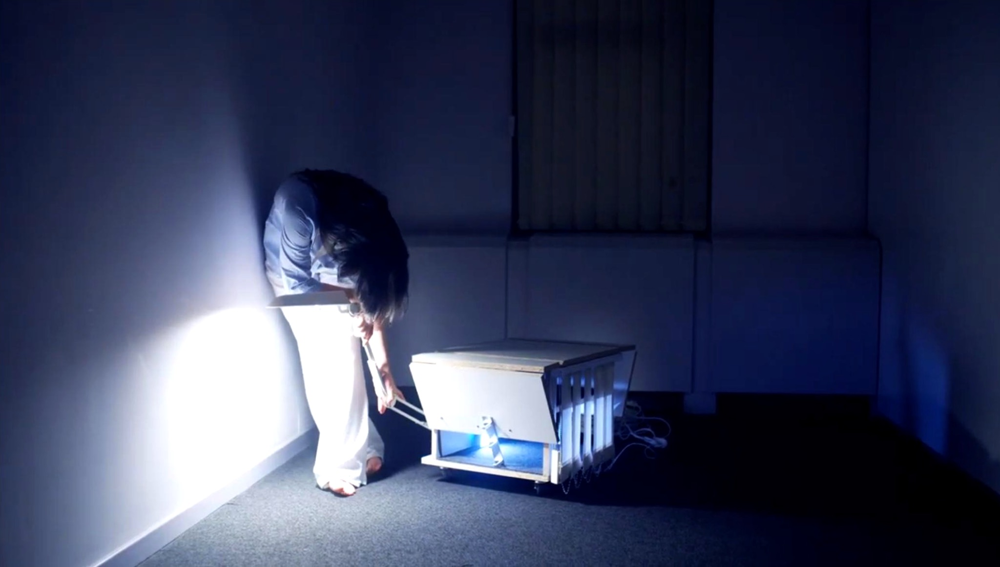

17th of April, 2026
a short film in the name of your presence, on the 17th of April, 2026,
organised by corpo ration incoöperated – starting @ 8pm @ GC Ten
Weyngaert, Rue des Alliées 54, 1190 Forest – tickets are now available through:
this link
Amidst the largest property sale in Brussels' history, a former European Commission building is being kept operational by a collective presence at work. As two reporters wander its corridors in search of a manager, routines and roles emerge. Hors Service
explores how institutional spaces are performed, sustained, and quietly reshaped by those who occupy them.

************